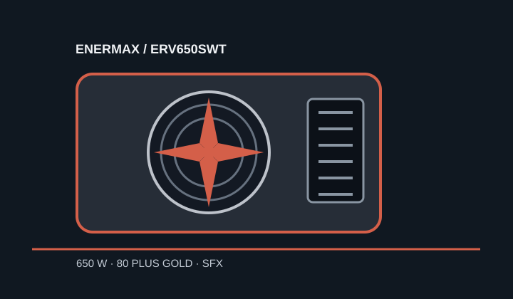

[ POWER CONVERSION // IDENTIFIED MODEL ]
Enermax REVOLUTION SFX 650W
Manufacturer model ERV650SWT. Identify by the exact suffix rather than the REVOLUTION SFX family name alone.

HIGH-VOLTAGE SAFETY: Never open or probe a PSU; hazardous voltage may persist when disconnected.
Verified model specifications
| Model / rated output | Enermax REVOLUTION SFX, ERV650SWT; 650 W. |
|---|---|
| Form factor / dimensions | SFX; 100 × 125 × 63.5 mm (length × width × height). An SFX-to-ATX mounting bracket is included according to Enermax. |
| DC output rails | +3.3 V: 18 A; +5 V: 15 A; +12 V: 54 A / 648 W; −12 V: 0.3 A / 3.6 W; +5 VSB: 3 A / 15 W. The cited sources do not give a combined +3.3 V/+5 V limit. |
| Efficiency claim | 80 PLUS Gold, listed in the Enermax datasheet. |
| Cable-end connector counts | Fully modular: 24-pin motherboard ×1; CPU 4+4-pin ×1; PCIe 6+2-pin ×2; SATA ×6; Molex ×4. These are cable-end counts. |
| Revision and cable cautions | Use exact model ERV650SWT and verify the regional nameplate, AC cord and included leads. Do not reuse modular PSU cables from other Enermax models unless the manufacturer explicitly approves that exact cable for this model and revision. |
Compatibility & safe installation
- Check SFX mounting depth, airflow and plug bend room against the actual enclosure; included ATX mounting hardware does not make an SFX unit electrically interchangeable with an ATX unit.
- Validate load against 650 W total and 648 W maximum on +12 V, then confirm connector type and count for the motherboard, CPU and GPU.
- Keep all modular cables with their identified power supply. Plug fit does not indicate a matching pinout.
- Do not open or electrically probe the enclosure.
Manufacturer sources
- Enermax REVOLUTION SFX datasheetManufacturer model, dimensions, rails, rated power, efficiency and cable-end inventory.
- Enermax Japan REVOLUTION SFX manualManufacturer-hosted product manual and installation/safety reference.